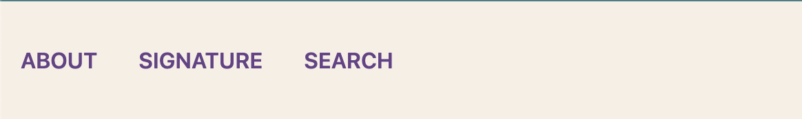
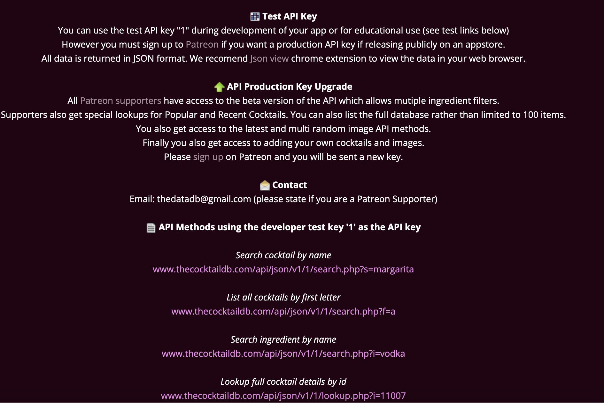

Topic & Purpose
The Reality Bar Webpage is designed to provide customers with a convenient way to search and explore our cocktail menu. The website offers a platform for users to explore the bar's story, signature drinks, engage in a cocktail search, and develop their own Favorite Drink List.
Instructions
Navigation Bar
The webpage has a navigation bar which allows the user to jump around three sections -- About Us, Signature Drinks, and Search.
Adaptability to Browers
About Us section gives user an introduction of the bar. Signature drinks provide users with information about Reality's popular drinks with ingredients and prices listed. Noticeably, the drinks display will adapt to the size of the browser (two drinks in a row in a narrower window vs. four drinks in a row in a wider window):
Search from API and Display Error
Users can search for keywords in the Cocktail Search section, and it will return results based on the API database. If user typed nothing, the console will return an error message as shown:
For example, if user types in keyword "punch" to search:
Then cocktails contain "punch" will be returned. The previous searched word "punch" will automatically be erased for the next search.
Event Handler to Create List of Favorite Drinks
After search results are returned, the user can choose to add drinks to their favorite drink list by clicking the button "add to fav". They can add multiple drinks, however, repeated drinks can not be added. If the user adds the same drink twice, the error message will appear:
Extras
1. JSON API Integration
The project integrates with "TheCocktailDB" API, allowing real-time retrieval of cocktail data for the search feature. Keyword is the user-defined parameter that is passed to the API. CocktailDB API documentation link: https://www.thecocktaildb.com/api.php
2. Event-driven DOM Manipulation
The navigation bar enables smooth scrolling to different sections on the page when navigation links are clicked. This is achieved through the onClick event handlers that trigger the scrollToSection function, using the window.scrollTo method. The Cocktail component contributes by rendering individual cocktails and display "add to fav" button within each item. Clicking on the button triggers the addToFavorites function, adding the selected cocktail to the favorites list.